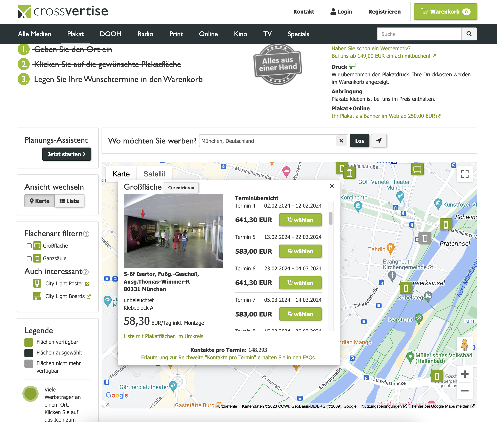

Our current out-of-home (OOH) booking process isn't user-friendly, leading to a high number of users abandoning the purchase page. Our aim is to overhaul the user flow, making the booking process more intuitive and straightforward.
My Role and Contributions
As the lead designer, I oversaw the entire redesign process, from initial research to final implementation. I conducted user interviews, crafted wireframes and prototypes, and iterated based on user feedback to refine the product.
Challenges
- Simplifying Onboarding: Making it easy for new users to navigate through the booking process.
- Clarifying Information: Ensuring that all necessary details are clearly presented without the need for additional explanations.
- Communication: Implementing effective notifications to keep users informed throughout the process.
Design Process
- Research: Conducted market analysis and user interviews to understand user needs and pain points.
- Ideation: Brainstormed solutions to enhance user experience and streamline the booking process.
- Prototyping: Developed and refined prototypes to visualize our proposed solutions.
- User Testing: Gathered feedback through extensive user testing to validate design decisions.
- Iteration: Incorporated user feedback to iteratively improve the design and usability.
Results and Insights
Introduction of a simplified user flow led to a 35% decrease in bounce rates, indicating improved user engagement. User feedback also highlighted enhanced satisfaction with the booking process.
Visuals and Prototypes
Detailed mockups and prototypes are available upon request, showcasing the evolution of our design from concept to implementation. These visuals demonstrate our user-centric approach and iterative design process.
Conclusion
By prioritising user needs and streamlining the booking process, we've made significant strides in improving user satisfaction and engagement. This project underscores the importance of user-centered design and continuous iteration to create intuitive and user-friendly experiences.